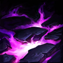

起手裝備
 增幅典籍
增幅典籍
黑焰→黎安卓的清營及持續傷害核心獲同路配置支持，保留冰杖控區；補上被突進時冰杖換中婭的實際選項，避免文字說有沙漏、換裝欄卻空白。


五件成裝與鞋子分開列示；起手與核心是購買路線，不是額外佔用的成裝欄位。鞋子完成時機仍依對線壓力與回城金錢調整。


保留黑暗收割與凌虐的傷害方向；Q控制及W後續傷害可利用凌虐新冷卻。相位流是不同進場取向，不與目前主系混搭。


閃現保留進場角度與撤退彈性，重擊維持打野必備。 本英雄以法系控制／高速清野／黑盾反制定位使用；7.3b不改重擊主動斬殺值，需看進化與充能。
加點優先：W > Q > E
同路參考支持W>Q>E；維持W起手，Q保留反入侵，E一點應對關鍵控制。
對敵方英雄、大型士兵以及中大型野怪造成技能傷害時回復自身生命，提高持續消耗與推線續航。
射出黑暗能量，命中第一個敵人時造成魔法傷害並長時間禁錮，是抓人與反開的核心技能。

詛咒指定區域並持續造成魔法傷害，目標生命越低傷害越高；被動治療可協助縮短冷卻。
為友軍英雄套上魔法護盾，吸收魔法傷害，並在護盾存在期間免疫多數控制效果。
以鎖鏈連結附近敵方英雄，造成傷害與緩速；未能掙脫鎖鏈者在延遲後再次受傷並被暈眩。
W 持續傷害清營、Q 反蹲與 E 黑盾保護是打野定位，不套輔助核心。已核對既有技能摘要、連招操作條件及前中後期說明；沒有足夠證據改寫其餘完整技能成長數值。
1技禁錮 → 2技腐蝕 → 普攻 → 4技追控
一技命中後立刻鋪二技吃滿持續傷害；敵人仍有位移時，再用大絕封鎖撤退。
3技黑盾 → 1技反控 → 2技 → 4技 → 普攻
先替即將被開的隊友套盾，免疫關鍵控制後反手禁錮；適合對付依賴單一控制進場的打野。
3技自保 → 閃現進場 → 4技連結 → 2技 → 1技封走位
先套黑盾再閃現連結多人，二技鋪在腳下並用一技封鎖出口；沒有中婭或隊友跟進時不要盲開。
二技持續傷害與被動回血讓她能健康地處理多目標營地。Gank 不必強行從正面命中一技，可先反蹲或等隊友控制後接禁錮；黑暗之盾要留給真正的關鍵控制。
黑焰火炬 → 黎安卓的折磨先確立清營與持續傷害，再補瑞萊的冰晶節杖限制走位。若需要閃現大絕或敵方突進爆發很高，第三格冰杖可改中婭沙漏；沒有購買沙漏時不規劃依賴凝滯的進場。
站位以中後排為主，持續用禁錮和腐蝕控制區域。需要開團時可先套黑盾再閃現大絕，但必須確保隊友能跟上或擁有中婭保命。
缺少新版同分路對局證據，保留野區機制名單，有利名單僅是既有機制判斷，排除與威脅重複者；魔甘娜入侵仍看兩側線權、血量及關鍵技能，不當作固定單挑勝率。
對局名單是機制與分路判斷，不代表固定勝率；需同時看雙方熟練度、兵線與陣容。
二技清營期間容易被突進找上；一技保留給入侵者，不能沒線權仍在敵野長時間放地板。
黑焰提前到第一件支援技能循環，再補黎安卓持續傷害；清營主二技，黑盾保留給支援對象。
留意前期入侵與視野側的進場，沒有線權時別獨自爭野。
避免孤立狀態在野區久留，靠近隊友或兵線再接戰。
替換以本頁五件成裝為基準；同一格建議擇一。二、三級鞋是一條升級線，換鞋時整條同步；魔劍進化不占新欄位。
高
觸發：需要更高魔法穿透時，替換原百分比穿透裝，不同時堆死墓與虛空。
已帶此裝時保留；同一格多個建議擇一。
主動裝占成裝格；鞋子更換時整條升級路線一起更換。
高
觸發：主動無敵幫助等待隊友及第二輪技能，使用時機需配合敵方爆發。
瑞萊的冰晶節杖 → 中婭沙漏
需要閃現大絕或被突進集火，且隊友能接應凝滯結束位置時。
以冰杖的持續緩速換取主動凝滯；不新增第六格，也不把沒有購買的沙漏寫成預設工具。
主動裝占成裝格；鞋子更換時整條升級路線一起更換。
高
觸發：先遺忘寶珠過渡，必要時替換末件；重創不因多人裝備而相加。
虛空之杖 → 黑魔禁書
先遺忘寶珠過渡，必要時替換末件；重創不因多人裝備而相加。
先遺忘寶珠過渡，必要時替換末件；重創不因多人裝備而相加。
主動裝占成裝格；鞋子更換時整條升級路線一起更換。
高
觸發：護盾持續妨礙集火時，以破盾功能替換末件，不把護盾誤當治療。
虛空之杖 → 水仙三叉戟
護盾持續妨礙集火時，以破盾功能替換末件，不把護盾誤當治療。
護盾持續妨礙集火時，以破盾功能替換末件，不把護盾誤當治療。
主動裝占成裝格；鞋子更換時整條升級路線一起更換。
高
觸發：二級鞋改水星之靴，三級鞋對應鎖鏈軍靴；韌性不縮短擊飛。
魔力之靴 → 水星之靴
魔法傷害及可被韌性縮短的控制占主導時，鞋線整條改水星之靴→鎖鏈軍靴。
魔法傷害及可被韌性縮短的控制占主導時，鞋線整條改水星之靴→鎖鏈軍靴。
主動裝占成裝格；鞋子更換時整條升級路線一起更換。
7.3d差異核對：本頁核對官方英雄／裝備差異與現行配置參照；未列的技能不表示已完成逐級實測。查看校正範圍。
本頁校正版本：7.3d；校正日期：2026-10-25。
參考來源標示版本：7.3c
本輪核對官方版本差異、道具/符文引用、五成裝與鞋線、逐級加點及情境替換一致性。Tier及玩法屬本站編輯判斷，不是官方排名或台服勝率；未公開的全級技能表不推算。
評級理由：7.3c 維持 A（本站判斷）。本站定為A型功能法系打野：W處理營地、Q反蹲、黑盾反制關鍵控制；若鄰路沒有線權、面對前期貼身入侵，不能把清營優勢等同單挑優勢。 7.3c 未改動此分路的英雄數值，沒有新證據只因版本號而升降。
Riot 官方資料 ↗ · Riot 官方資料 ↗ · Riot 官方資料 ↗ · Riot 官方資料 ↗ · Riot 官方資料 ↗ · WildRiftFire 參考攻略 ↗ · wr-meta.com ↗
7.3c 的直接英雄倍率改動屬符文大亂鬥；本召喚峽谷配置承接 7.3b。未把模式專屬增削轉為峽谷增削。
五件成裝、獨立鞋線、起手、核心、情境替換引用與一般符文列別均重新檢查；移除裝備不列入當前推薦。